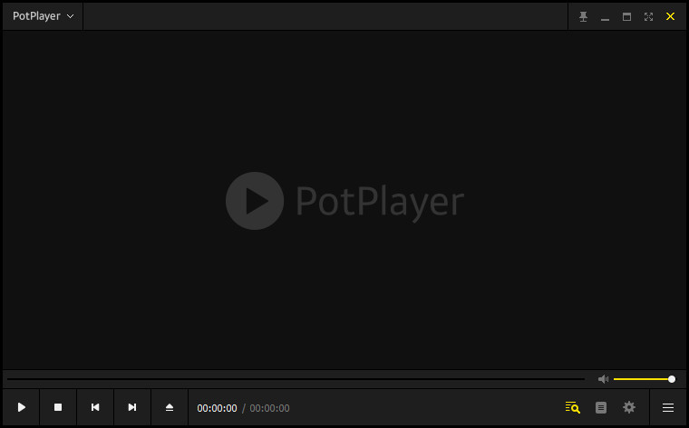
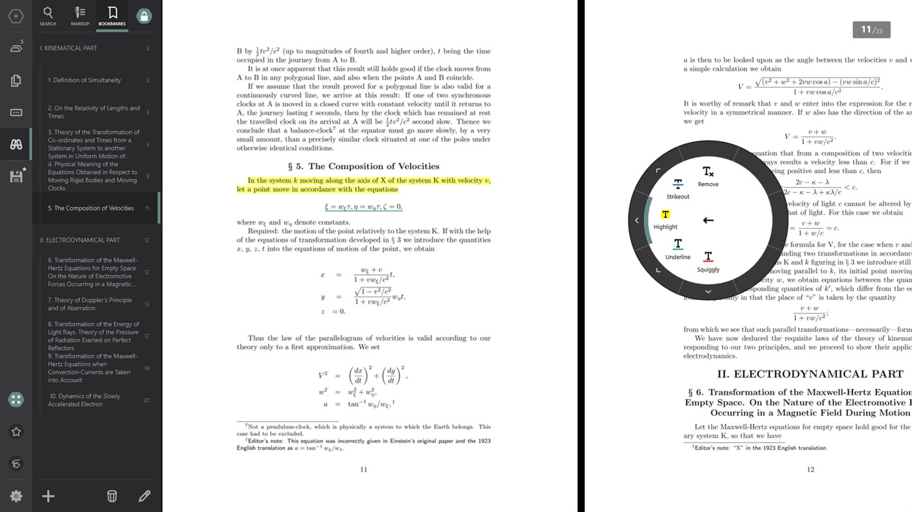
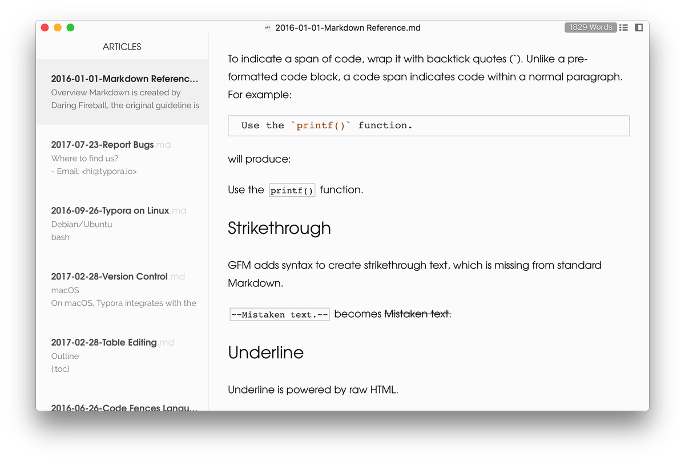
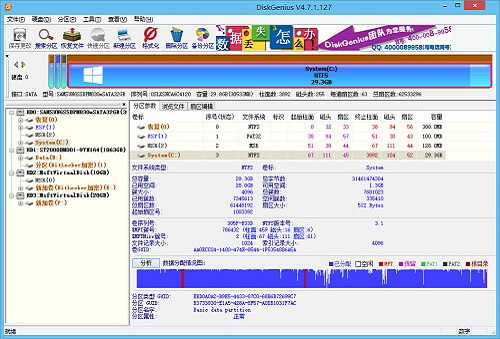

也许很多同学经常苦恼于找不到免费, 好用, 美观, 干净的软件. 这里为大家推荐一些十分好用的
Windows平台电脑软件及部分安装教程链接. (破解软件的也帮你们找好了哦)
必备
全局文件搜索工具
只要你曾试过在Windows资源管理器中搜索文件你就会知道只要搜索范围稍微大一些这个搜索过程是多么长…
🔗 Everything 这款搜索工具让搜索变得十分迅速! 它甚至支持正则搜索等更高级的功能.
💡 Everything安装起来也很容易, 下载上面链接中的安装版64位, 安装引导中除了安装位置都维持默认选项即可.
电脑管家
国内一提电脑管家那就是360, 鲁大师等一众流氓软件, 事实上他们给我们带来的困扰比便利更多, 不仅弹出各种迷之弹窗, 大多数还会捆绑下载一大堆奇奇怪怪的软件… 但清理垃圾, 管理开机启动程序等功能确实是需要的.
我推荐🔗 CCleaner 页面往下拉, 点击绿色的Download按钮即可下载免费版.

💡 安装后可以在设置中将语言调为中文. 另外默认情况下CCleaner总是会弹出提示可以更新的弹窗, 但这个检查更新的功能可以像这样关闭
截图/贴图工具
我们都知道Windows自带的截图工具是很不好用的, 只能进行最简单的截图.
这里推荐🔗
snipaste.
snipaste不仅能截图, 还能简单的P一下截下来的图: 画线, 画框, 画箭头, 打码, 查看像素点颜色值…
而我觉得snipaste最惊艳的功能是他还能贴图, 也就是能把刚截的图直接显示出来, 可以挪动, 调整大小, 调整透明度. 比如当我们想对照着看课文里两个相隔很多页的段落时, 我们可以把其中一段截图并贴出来.

压缩/解压缩工具
而压缩/解压缩工具最棒的无疑是🔗 Bandizip
Bandizip支持的格式很多, 不必担心遇到无法解压的格式. 另外它的界面也很漂亮😄

百度网盘破解版
国内分享大文件通常使用百度网盘, 但这东西如果不充超级会员会极大的限制下载速度 (不过在校园有些地方能达到2, 3Mb/s), 下载文件数量也有限制. 网上有好几个破解版百度网盘, 也有脚本能突破百度网盘下载速度限制, 但用来用去我还是觉得🔗 PanDownload 体验最佳.

💡 PanDownload不需要安装, 点击本地下载后将压缩包解压就可以点击其中的exe
文件使用了. 另外PanDownload也有在线版
视频播放器
虽然爱奇艺, 迅雷影音, 优酷等软件也能看外部导入的视频, 但如果我们想要一款单纯没有繁杂的视频推荐, 广告, 但又功能强大的视频播放器,
PotPlayer当属最值得推荐的播放器.
💡 PotPlayer的官网被墙了, 无法翻墙的同学们可以从这里下载

音乐播放器
和视频播放器的情况相同, 我们同样需要一个干净, 功能强大的无损音乐播放器, 那就是🔗
foobar2000 foobar支持的音频格式众多, 解析度较好. 如果你觉得foobar界面有点简朴, 还可以更换皮肤

💡 foobar不默认支持的ape格式可以通过安装插件来支持.
Chrome插件
必备
查词工具

🔗 沙拉查词
是一款查词十分迅速便利, 弹出界面十分养眼, 可选功能很多的查词工具, 是chrome查词插件中毫无疑问最好的!
网页截长图工具

如果只是为了截普通的图有了snipaste的我们没必要再给浏览器单独装一个插件, 但🔗
FireShot
的惊艳之处在于它可以截长图. FireShot能将整个网页转为图片,, 也能截指定区域的长图.
稍后阅读

虽然我现在用的是chrome, 但我很喜欢edge的稍后阅读功能, 能把当前所有网页都关闭并放到稍后阅读的列表里. 一方面如果网页开多了浏览器十分吃内存, 一方面能将一部分目前暂时不看但还有用的网页收纳起来, 让网页变少一些, 心情也会好不少😆
可惜的是chrome并没有内置这个功能. 不过通过🔗
OneTab
这个插件倒是实现了稍后阅读的功能👍
GitHub
下载仓库指定文件/文件夹

很多时候我们只想下载一个仓库中一部分文件而不是整个仓库, 但GitHub本身并没有提供这种功能. 如果用git命令未免有点麻烦.
🔗GitZip允许我们一键下载一个文件夹为压缩包, 可以说是很便利了😃
侧边栏显示仓库文件树

在GitHub上想找一个文件只能一层一层文件夹点进去是一件令人十分苦恼的事, 而🔗
Octotree
能让我们像使用IDE一样在侧边栏看到文件树, 甚至是带图标的!
3D GitHub提交热力图

🔗 Isometric
Contributions
纯碎是一个美化GitHub个人主页的贡献热力图的插件. 它会将Github Contributions Graph呈现为
3D的柱状图. 非常炫酷😎
学术
谷歌学术搜索

使用这个🔗 Google学术搜索按钮
可以十分便利的搜索有关学术的内容.
一键跳转Sci-Hub

Sci-Hub是一个emmm你们以后会知道的神仙网站, 🔗 Auto
Sci-Hub
实现了一键从论文网页跳转Sci-Hub功能
💡 不过Sci-Hub上只有SCI的文章, 如果想下知网等国内文献数据库的文章, 只需连接校园网后再进入即可下载. 学校为大家购买了许多数据库 (具体哪些数据库大家可以到
学校图书馆官网查看, 中外数据库都有), 可以免费下载各种文献👍
办公
Office全家桶
现在我来解说一下如何破解Office… 不,没这么麻烦, 电子科大为同学们提供了免费的正版Office! (甚至格院同学们可以享受高贵的Office365套装🐮🍺)
💡 上面这个链接只能通过校园网或者寝室WiFi登录. Office的激活需要通过学校提供的这个软件进行.
💡 顺带一提, 用学校邮箱 (学号@std.uestc.edu.cn)登录OneDirve (格院同学们也可以用
格大学号@student.gla.ac.uk登录), 会惊喜的发现有2T的云空间!
PDF阅读器
实际上只是想看PDF的话你只需要有Chrome或者Edge这两个浏览器之一就可以了.我个人觉得chrome不适合拿来看pdf, 因为它看pdf的界面不好看😁 而用Edge看pdf甚至体验很良好, 打开速度快, 还能点右上角的笔图标来用OneNote做笔记. 也有很多人用的是老牌pdf阅读器Adobe Acrobat. 虽然Acrobat历史悠久, 但它的界面设计得很现代,很值得称赞的是它打开pdf的速度. 但是Adobe家的东西向来要钱, 想免费使用Acrobat那就得破解, 我觉得不如就用Edge了.
但是上述几款的问题在于他们并不能记忆阅读进度. 如果课件每次打开需要手动翻到讲到的地方我觉得还是挺麻烦的. 🔗 Drawboard
PDF
是我目前使用的pdf阅读器. 很不幸的是在我下载时还免费的这个软件现在要好几十了😁 不过这个软件能记忆阅读进度, 支持手写/触屏模式, 做笔记的方式甚至比OneNote还要丰富.
如果你喜欢在pdf上手写笔记还是很推荐这款软件的.

写作
文本编辑器
因为历史原因, Windows记事本会在文件最开头加一个
BOM, 导致在某些情况下文本会被识别为乱码.
最受认可的记事本是🔗 notepad++, 它没有上面说这个毛病, 还有许多很实用的功能, 比如他能装插件, 比如基本所有语言的语法高亮 (在notepad中以HTML格式复制代码直接粘贴到word可以连语法高亮一起粘贴过去! 当然VSCode等编辑器一样能做到)
Markdown
要说写markdown那必然是🔗 Typora
这是一款所见即所得的跨平台Markdown编辑器. 极其美观, 能显示大纲, 能直接粘贴图片, 能迅速更换颜色主题,能显示数学公式, 能导出文件为HTML, PDF等. 总之写markdown认准
typora!

💡 在typora的帮助一栏有markdown语法参考文档.
是的pdf也是可以编辑的, 只不过大部分软件不支持.
前面提到的Acrobat是可以编辑pdf的, 但我最推荐的方式是用Word
打开编辑 (较老的版本不支持). 因为word学校免费提供了.
Adobe全家桶
以下是来自一个微信公众号的adobe全家桶安装和破解教程
CAD
AutoCAD和SolidWorks是大学生最常接触到的CAD (计算机辅助绘图) 软件, 其中
AutoCAD更多是用于绘制2D图纸, 而3D设计最常用的就是SolidWorks了.
💡 因为SolidWorks无法向上兼容 (低版本SW无法打开在高版本创作的工程), 考虑到用得最多的版本是2016, 此处也给出2016版的链接.
MATLAB
好几个学院在高年级都会有用到MATLAB的课程, 但我自己是不甚喜欢MATLAB
的. 从链接能看出
MATLAB更多是工科生验证算法用的, 本身不算什么高明东西. (如果你有精力我推荐Python!)
不过MATLAB用鼠标点一点就能画出很直观的图, 工具集成度非常高这几点还是很不错的. 再怎么说学校说要用能有什么办法😁
👇 给非格院同学们的最新版MATLAB安装和破解教程
而格院学子就很牛逼了, 有🔗 格大提供的免费正版MATLAB用! 不过说实话格院学费在那摆着, 并不会让人有占便宜的感觉🤷
💡 MATLAB官网上说每个账号只能给一台设备激活MATLAB, 不过我看我激活了好几台一样都能用.
系统安装/维修工具
系统启动盘烧录工具
🔗 Rufus是功能最强大的系统启动盘烧录工具. 不管是Windows还是Ubuntu亦或是Arch, Raspbian… 通通都能烧录! 使用也十分简单, 通常只需选择要烧录到的移动储存设备和要烧录的镜像即可, 其他选项Rufus会自动识别该选什么.
![[rufus screenshot]](给电子科大新生们的软件推荐列表/rufus_en.png)
💡 我在我的移动硬盘中收集了一些常用的镜像, 并放了一个便携版Rufus安装包在这个文件夹, 这样要烧录系统启动盘时我只需同时插上我的移动硬盘和要烧录系统的U盘就可以进行👍
PE盘
什么是PE盘?
Win PE, Windows预先安装环境 (英语：Microsoft Windows Preinstallation Environment) , 简称Windows PE或PE. 其实就是一个轻量版的Windows系统, 由于体积比较小, 可以直接存储在U盘或者移动硬盘上. 一般电脑维修人员使用其查找故障, 也是装机重要工具之一.
国内有许多PE工具, 比如老毛桃, 大白菜, 微PE等
我推荐🔗 优启通. 这个PE盘的工具很齐全, 界面也比较好看, 能兼容更新一些的windows系统.
数据恢复
基本上出去修电脑说要恢复数据那修电脑的师傅就会打开🔗 DiskGenius一通操作, 然后如果还找不回来一般他就告诉你修不了了😁
